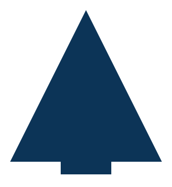

Operative Stufen
- OP-0
 anonymer Beobachter
anonymer Beobachter - OP-1  erster unterschriebener Beitrag
- OP-2 verantwortliche Rückmeldung
- OP-3 Bewertung mit Begründung
- OP-4 Revision nach drei Wochen
- OP-5 frühere Bewertungen widerrufen
- OP-6 Konsens bestätigen
- OP-7 strukturelle Autorität
- OP-8 Kandidatenphase für OP-9
- OP-9 Spenden prüfen, Nominierungen bestätigen
- OP-9.A bestätigter digitaler Yokozuna
- OP-10 digitaler Kandidat für OP-11
- OP-11 digitaler Yokozuna-Schwingerkönig